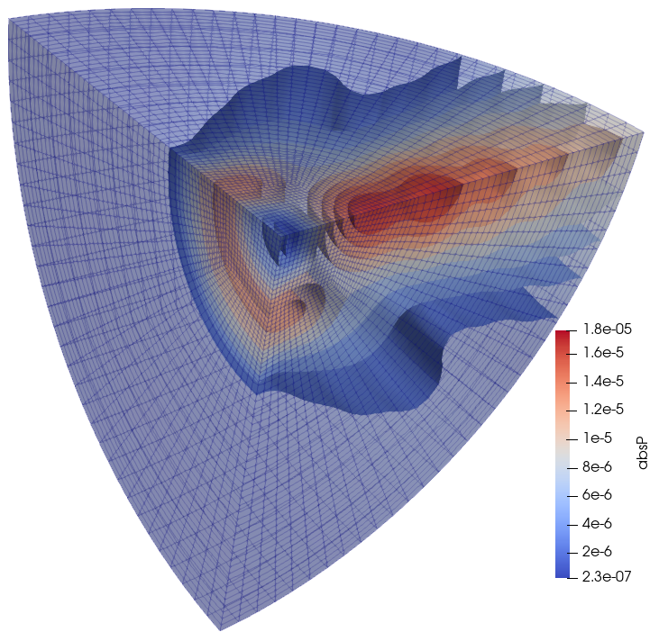

Baffled piston in a half-sphere domain
Description
Baffled piston in a half-sphere domain with Absorbing Boundary Condition (ABC).

Goals
#Definitions
The finite element code realize on the basic functionality implemented in this package.
using FinEtoolsThe acoustics functionality is brought in:
using FinEtoolsAcousticsWe shall need some facilities from the linear algebra package
using LinearAlgebraThe input quantities are provided including the units:
rho = 1.21*phun("kg/m^3");# mass density
c = 343.0*phun("m/s");# sound speed
bulk = c^2*rho;
omega = 7500*phun("rev/s"); # frequency of the piston
a_piston = -1.0*phun("mm/s") # amplitude of the piston acceleration
R = 50.0*phun("mm");# radius of the piston
Ro = 150.0*phun("mm"); # radius of the enclosure
nref = 4;#number of refinements of the sphere around the piston
nlayers = 35; # number of layers of elements surrounding the piston
tolerance = R/(2^nref)/100Hexahedral mesh
fens,fes = H8sphere(R,nref);
bfes = meshboundary(fes)
File = "baffledabc_boundary.vtk"
vtkexportmesh(File, connasarray(bfes), fens.xyz, FinEtools.MeshExportModule.VTK.Q4)
@async run(`"paraview.exe" $File`)
l = selectelem(fens, bfes, facing = true, direction = [1.0 1.0 1.0], dotmin= 0.001)
ex(xyz, layer) = (R+layer/nlayers*(Ro-R))*xyz/norm(xyz)
fens1, fes1 = H8extrudeQ4(fens, subset(bfes,l), nlayers, ex);
fens, newfes1, fes2 = mergemeshes(fens1, fes1, fens, fes, tolerance)
fes = cat(newfes1,fes2)Piston surface mesh
bfes = meshboundary(fes)
l1 = selectelem(fens, bfes, facing = true, direction = [-1.0 0.0 0.0])
l2 = selectelem(fens, bfes, distance = R, from = [0.0 0.0 0.0], inflate = tolerance)
piston_fes = subset(bfes,intersect(l1,l2));Outer spherical boundary
louter = selectelem(fens, bfes, facing = true, direction = [1.0 1.0 1.0], dotmin= 0.001)
outer_fes = subset(bfes,louter);Region of the fluid
material = MatAcoustFluid(bulk, rho)
region1 = FDataDict("femm"=>FEMMAcoust(IntegDomain(fes, GaussRule(3, 2)), material))Surface for the ABC
abc1 = FDataDict("femm"=>FEMMAcoustSurf(IntegDomain(outer_fes, GaussRule(2, 2)), material))Surface of the piston
flux1 = FDataDict("femm"=>FEMMAcoustSurf(IntegDomain(piston_fes, GaussRule(2, 2)), material), "normal_flux"=> -rho*a_piston+0.0im);Make model data
modeldata = FDataDict("fens"=> fens, "omega"=>omega, "regions"=>[region1], "flux_bcs"=>[flux1], "ABCs"=>[abc1])Call the solver
modeldata = FinEtoolsAcoustics.AlgoAcoustModule.steadystate(modeldata)
geom = modeldata["geom"]
P = modeldata["P"]
File = "baffledabc.vtk"
vtkexportmesh(File, connasarray(fes), geom.values, FinEtools.MeshExportModule.VTK.H8;
scalars = [("absP", abs.(P.values))])
@async run(`"paraview.exe" $File`)
trueThis page was generated using Literate.jl.